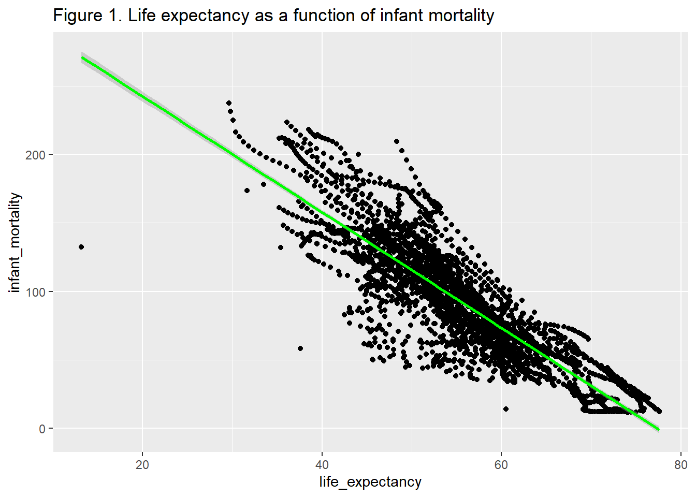
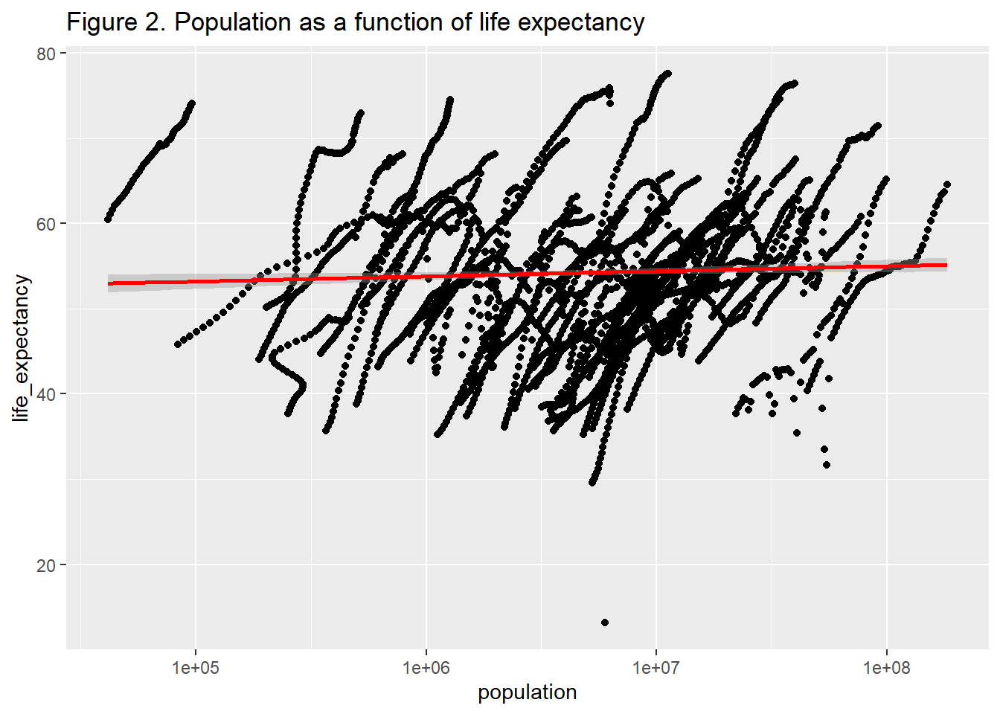
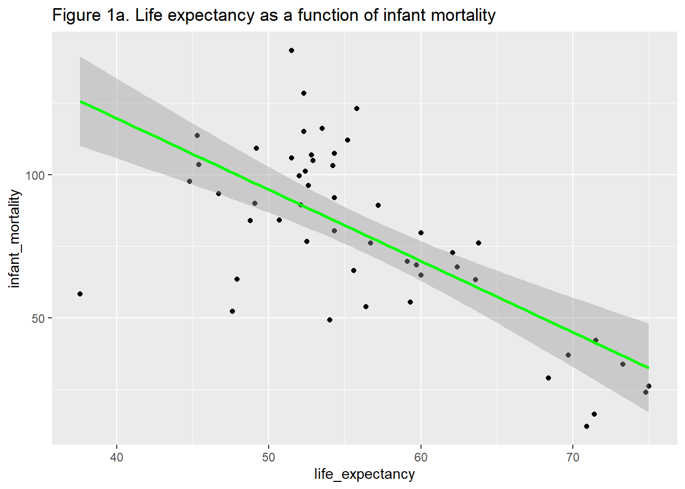
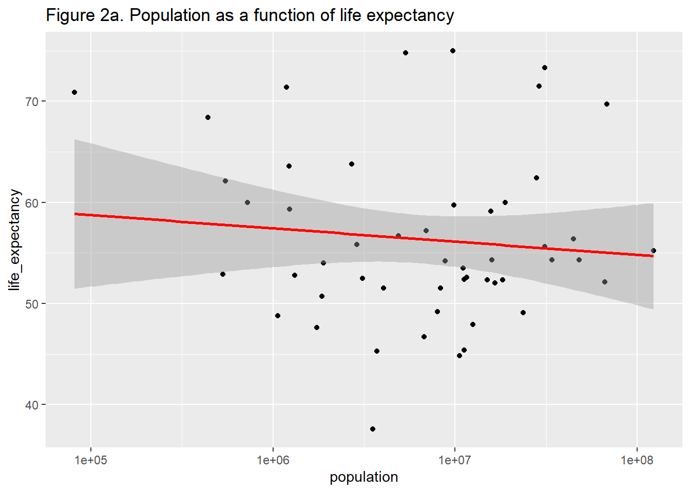
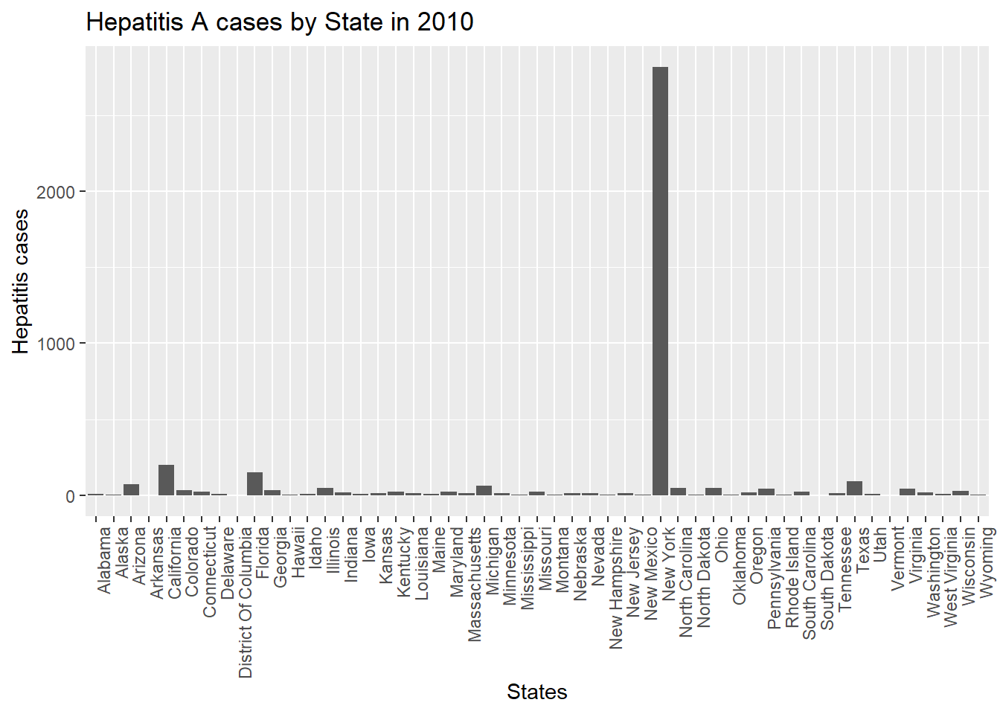
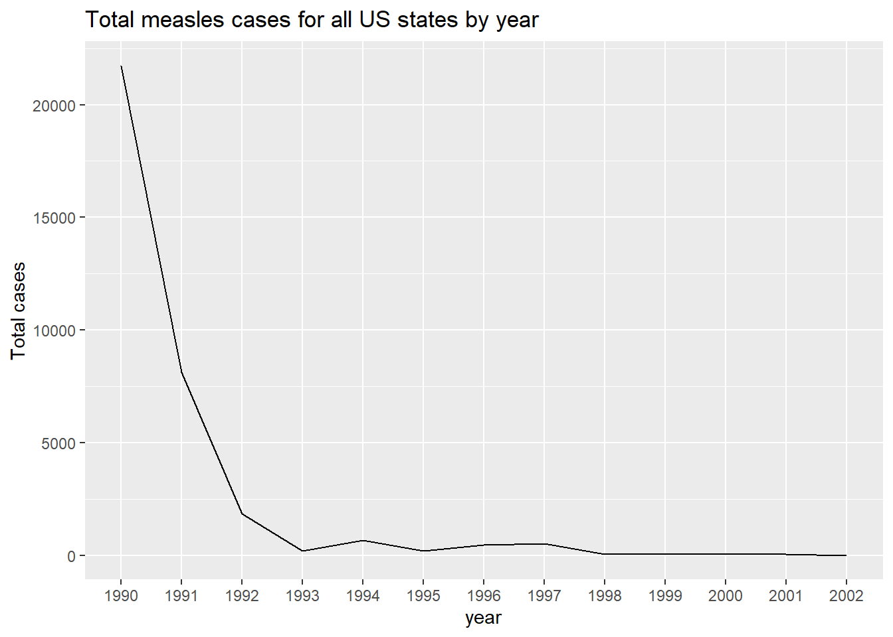
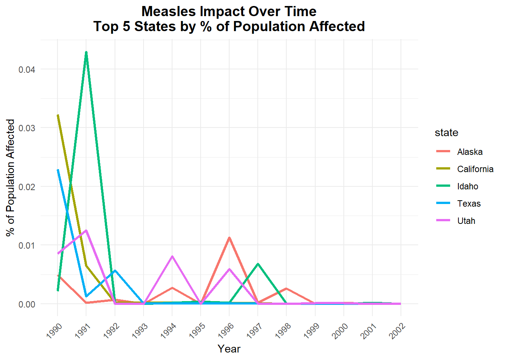

First we begin by installing necessary packages for this analysis if we haven’t already. Once the package installs, we need to load the package using library function. We need to load the packages before use, every time we open R.
Installing package into 'C:/Users/shaun/AppData/Local/R/win-library/4.4'
(as 'lib' is unspecified)
package 'dslabs' successfully unpacked and MD5 sums checked
The downloaded binary packages are in
C:\Users\shaun\AppData\Local\Temp\Rtmp8eDCFA\downloaded_packages
library("dslabs") #load the package.
Warning: package 'dslabs' was built under R version 4.4.3
library("tidyverse") #This is a good package for data processing tasks and since I have it installed, I only had to load it.
Warning: package 'tidyverse' was built under R version 4.4.2
Warning: package 'readr' was built under R version 4.4.2
Warning: package 'purrr' was built under R version 4.4.2
── Conflicts ────────────────────────────────────────── tidyverse_conflicts() ──
✖ dplyr::filter() masks stats::filter()
✖ dplyr::lag() masks stats::lag()
ℹ Use the conflicted package (<http://conflicted.r-lib.org/>) to force all conflicts to become errors
library(ggplot2) #use to generate plots. library(dplyr) #load this package if you want to use %>%
Now we are going to look into help file for gapminder data.
help("gapminder")
starting httpd help server ... done
We use the following function inorder to get an overview of the data structure.
str(gapminder) #get an over view of data structure.
'data.frame': 10545 obs. of 9 variables:
$ country : Factor w/ 185 levels "Albania","Algeria",..: 1 2 3 4 5 6 7 8 9 10 ...
$ year : int 1960 1960 1960 1960 1960 1960 1960 1960 1960 1960 ...
$ infant_mortality: num 115.4 148.2 208 NA 59.9 ...
$ life_expectancy : num 62.9 47.5 36 63 65.4 ...
$ fertility : num 6.19 7.65 7.32 4.43 3.11 4.55 4.82 3.45 2.7 5.57 ...
$ population : num 1636054 11124892 5270844 54681 20619075 ...
$ gdp : num NA 1.38e+10 NA NA 1.08e+11 ...
$ continent : Factor w/ 5 levels "Africa","Americas",..: 4 1 1 2 2 3 2 5 4 3 ...
$ region : Factor w/ 22 levels "Australia and New Zealand",..: 19 11 10 2 15 21 2 1 22 21 ...
We are now going to look into the summary of the data.
summary(gapminder)
country year infant_mortality life_expectancy
Albania : 57 Min. :1960 Min. : 1.50 Min. :13.20
Algeria : 57 1st Qu.:1974 1st Qu.: 16.00 1st Qu.:57.50
Angola : 57 Median :1988 Median : 41.50 Median :67.54
Antigua and Barbuda: 57 Mean :1988 Mean : 55.31 Mean :64.81
Argentina : 57 3rd Qu.:2002 3rd Qu.: 85.10 3rd Qu.:73.00
Armenia : 57 Max. :2016 Max. :276.90 Max. :83.90
(Other) :10203 NA's :1453
fertility population gdp continent
Min. :0.840 Min. :3.124e+04 Min. :4.040e+07 Africa :2907
1st Qu.:2.200 1st Qu.:1.333e+06 1st Qu.:1.846e+09 Americas:2052
Median :3.750 Median :5.009e+06 Median :7.794e+09 Asia :2679
Mean :4.084 Mean :2.701e+07 Mean :1.480e+11 Europe :2223
3rd Qu.:6.000 3rd Qu.:1.523e+07 3rd Qu.:5.540e+10 Oceania : 684
Max. :9.220 Max. :1.376e+09 Max. :1.174e+13
NA's :187 NA's :185 NA's :2972
region
Western Asia :1026
Eastern Africa : 912
Western Africa : 912
Caribbean : 741
South America : 684
Southern Europe: 684
(Other) :5586
Let us determine the type of object “gapminder” is.
class(gapminder)
[1] "data.frame"
Processing Data:
For this part of data prcessing we want to focus on Africa only so we will create an objest called africadata that holds all the data for Africa.
head(africadata, n =100) #view the first 100 rows of the dataset.
country year infant_mortality life_expectancy fertility
1 Algeria 1960 148.2 47.50 7.65
2 Angola 1960 208.0 35.98 7.32
3 Benin 1960 186.9 38.29 6.28
4 Botswana 1960 115.5 50.34 6.62
5 Burkina Faso 1960 161.3 35.21 6.29
6 Burundi 1960 145.1 40.58 6.95
7 Cameroon 1960 166.9 43.46 5.65
8 Cape Verde 1960 NA 50.12 6.89
9 Central African Republic 1960 165.5 37.43 5.84
10 Chad 1960 NA 40.95 6.25
11 Comoros 1960 200.0 44.04 6.79
12 Congo, Dem. Rep. 1960 174.0 43.90 6.00
13 Congo, Rep. 1960 110.6 48.25 5.88
14 Cote d'Ivoire 1960 208.4 38.00 7.35
15 Djibouti 1960 NA 45.77 6.46
16 Egypt 1960 209.6 48.31 6.63
17 Equatorial Guinea 1960 NA 37.69 5.51
18 Eritrea 1960 NA 39.03 6.90
19 Ethiopia 1960 162.0 37.72 6.88
20 Gabon 1960 NA 38.83 4.38
21 Gambia 1960 148.4 35.70 5.57
22 Ghana 1960 125.1 46.34 6.75
23 Guinea 1960 NA 35.71 6.10
24 Guinea-Bissau 1960 NA 43.14 5.83
25 Kenya 1960 118.6 47.42 7.95
26 Lesotho 1960 143.3 47.02 5.84
27 Liberia 1960 212.0 35.24 6.41
28 Libya 1960 164.5 44.59 7.54
29 Madagascar 1960 112.0 41.96 7.30
30 Malawi 1960 218.2 38.51 6.91
31 Mali 1960 237.4 29.61 6.70
32 Mauritania 1960 135.0 43.91 6.78
33 Mauritius 1960 67.8 58.74 6.17
34 Morocco 1960 145.0 49.64 7.07
35 Mozambique 1960 183.0 38.17 6.60
36 Namibia 1960 102.0 47.07 6.15
37 Niger 1960 NA 36.82 7.05
38 Nigeria 1960 165.0 40.39 6.35
39 Rwanda 1960 127.9 43.07 8.19
40 Senegal 1960 126.3 38.46 6.95
41 Seychelles 1960 73.6 60.42 5.27
42 Sierra Leone 1960 223.6 36.07 6.03
43 South Africa 1960 NA 49.01 6.17
44 Sudan 1960 107.4 49.54 6.69
45 Swaziland 1960 141.7 44.78 6.72
46 Tanzania 1960 144.3 45.57 6.81
47 Togo 1960 162.4 41.06 6.52
48 Tunisia 1960 173.4 43.20 7.04
49 Uganda 1960 132.3 45.27 7.00
50 Zambia 1960 123.2 48.34 7.02
51 Zimbabwe 1960 92.6 53.11 7.16
52 Algeria 1961 148.1 48.02 7.65
53 Angola 1961 NA 36.53 7.35
54 Benin 1961 183.9 38.80 6.34
55 Botswana 1961 112.2 50.70 6.63
56 Burkina Faso 1961 159.4 35.72 6.32
57 Burundi 1961 144.8 40.85 7.00
58 Cameroon 1961 163.3 44.00 5.71
59 Cape Verde 1961 NA 50.27 6.92
60 Central African Republic 1961 162.9 37.89 5.87
61 Chad 1961 NA 41.35 6.27
62 Comoros 1961 NA 44.47 6.85
63 Congo, Dem. Rep. 1961 NA 44.25 6.02
64 Congo, Rep. 1961 108.4 48.88 5.92
65 Cote d'Ivoire 1961 203.0 38.74 7.43
66 Djibouti 1961 NA 46.28 6.49
67 Egypt 1961 202.7 48.89 6.61
68 Equatorial Guinea 1961 NA 38.04 5.52
69 Eritrea 1961 NA 39.35 6.87
70 Ethiopia 1961 NA 38.35 6.88
71 Gabon 1961 NA 39.15 4.46
72 Gambia 1961 146.1 36.16 5.62
73 Ghana 1961 123.8 46.80 6.79
74 Guinea 1961 210.5 35.95 6.11
75 Guinea-Bissau 1961 NA 43.39 5.77
76 Kenya 1961 114.0 48.13 8.00
77 Lesotho 1961 142.3 47.54 5.83
78 Liberia 1961 212.1 35.54 6.43
79 Libya 1961 156.1 46.28 7.57
80 Madagascar 1961 NA 42.54 7.30
81 Malawi 1961 216.4 38.76 6.95
82 Mali 1961 231.5 29.83 6.73
83 Mauritania 1961 131.9 44.62 6.79
84 Mauritius 1961 66.3 59.75 6.18
85 Morocco 1961 142.7 50.11 7.11
86 Mozambique 1961 NA 38.79 6.60
87 Namibia 1961 NA 47.70 6.17
88 Niger 1961 NA 36.97 7.08
89 Nigeria 1961 NA 41.00 6.35
90 Rwanda 1961 125.3 43.41 8.19
91 Senegal 1961 126.0 38.63 6.99
92 Seychelles 1961 72.3 61.03 5.40
93 Sierra Leone 1961 220.5 36.57 6.09
94 South Africa 1961 NA 49.40 6.14
95 Sudan 1961 105.7 50.04 6.71
96 Swaziland 1961 140.1 45.10 6.73
97 Tanzania 1961 143.0 45.91 6.81
98 Togo 1961 159.4 41.74 6.57
99 Tunisia 1961 187.5 43.89 7.09
100 Uganda 1961 129.6 45.91 7.02
population gdp continent region
1 11124892 13828152297 Africa Northern Africa
2 5270844 NA Africa Middle Africa
3 2431620 621797131 Africa Western Africa
4 524029 124460933 Africa Southern Africa
5 4829291 596612183 Africa Western Africa
6 2786740 341126765 Africa Eastern Africa
7 5361367 2537944080 Africa Middle Africa
8 202316 NA Africa Western Africa
9 1503501 534982718 Africa Middle Africa
10 3002596 750173439 Africa Middle Africa
11 188732 NA Africa Eastern Africa
12 15248246 4992962083 Africa Middle Africa
13 1013581 626127041 Africa Middle Africa
14 3474724 2003623491 Africa Western Africa
15 83636 NA Africa Eastern Africa
16 27072397 12008501551 Africa Northern Africa
17 252115 NA Africa Middle Africa
18 1407631 NA Africa Eastern Africa
19 22151218 NA Africa Eastern Africa
20 499189 887289809 Africa Middle Africa
21 367929 NA Africa Western Africa
22 6652285 1902005320 Africa Western Africa
23 3577413 NA Africa Western Africa
24 616407 NA Africa Western Africa
25 8105440 2116484537 Africa Eastern Africa
26 851412 112602724 Africa Southern Africa
27 1120314 678395865 Africa Western Africa
28 1434576 NA Africa Northern Africa
29 5099371 2087989940 Africa Eastern Africa
30 3618604 347712093 Africa Eastern Africa
31 5263730 NA Africa Western Africa
32 858170 319353267 Africa Western Africa
33 660023 NA Africa Eastern Africa
34 12328534 7532416437 Africa Northern Africa
35 7493278 NA Africa Eastern Africa
36 602545 NA Africa Southern Africa
37 3395212 1020197091 Africa Western Africa
38 45211614 12836410903 Africa Western Africa
39 2933424 623378345 Africa Eastern Africa
40 3177560 1870217818 Africa Western Africa
41 41538 48981400 Africa Eastern Africa
42 2181701 488526149 Africa Western Africa
43 17396367 38336071006 Africa Southern Africa
44 7527450 3292300613 Africa Northern Africa
45 349233 NA Africa Southern Africa
46 10074490 NA Africa Eastern Africa
47 1580513 278575742 Africa Western Africa
48 4176266 NA Africa Northern Africa
49 6788211 NA Africa Eastern Africa
50 3049586 1666817402 Africa Eastern Africa
51 3752390 1459732283 Africa Eastern Africa
52 11404859 11946771141 Africa Northern Africa
53 5367287 NA Africa Middle Africa
54 2466002 641329523 Africa Western Africa
55 536576 132351054 Africa Southern Africa
56 4894578 620738750 Africa Western Africa
57 2840375 294235019 Africa Eastern Africa
58 5474509 2785779139 Africa Middle Africa
59 205958 NA Africa Western Africa
60 1529229 561479896 Africa Middle Africa
61 3061423 760658941 Africa Middle Africa
62 191828 NA Africa Eastern Africa
63 15637715 4451156989 Africa Middle Africa
64 1039966 678538008 Africa Middle Africa
65 3602075 2202622974 Africa Western Africa
66 88499 NA Africa Eastern Africa
67 27810001 12536920098 Africa Northern Africa
68 255100 NA Africa Middle Africa
69 1441297 NA Africa Eastern Africa
70 22671131 NA Africa Eastern Africa
71 504174 1018309175 Africa Middle Africa
72 376736 NA Africa Western Africa
73 6866545 1965121691 Africa Western Africa
74 3633778 NA Africa Western Africa
75 623413 NA Africa Western Africa
76 8361442 1949773813 Africa Eastern Africa
77 866253 114702544 Africa Southern Africa
78 1144896 694948647 Africa Western Africa
79 1483856 NA Africa Northern Africa
80 5223621 2130711083 Africa Eastern Africa
81 3700032 374275949 Africa Eastern Africa
82 5322267 NA Africa Western Africa
83 883223 368948552 Africa Western Africa
84 679045 NA Africa Eastern Africa
85 12713043 7349737688 Africa Northern Africa
86 7643290 NA Africa Eastern Africa
87 617282 NA Africa Southern Africa
88 3493636 1066579260 Africa Western Africa
89 46144154 12861030560 Africa Western Africa
90 2996091 597789678 Africa Eastern Africa
91 3265558 1931233186 Africa Western Africa
92 42402 46589993 Africa Eastern Africa
93 2210169 497363800 Africa Western Africa
94 17850045 39810250010 Africa Southern Africa
95 7749884 3322278876 Africa Northern Africa
96 357522 NA Africa Southern Africa
97 10373380 NA Africa Eastern Africa
98 1597528 312474882 Africa Western Africa
99 4235936 2957595859 Africa Northern Africa
100 7006629 NA Africa Eastern Africa
str(africadata) #get an overview the data structure.
'data.frame': 2907 obs. of 9 variables:
$ country : Factor w/ 185 levels "Albania","Algeria",..: 2 3 18 22 26 27 29 31 32 33 ...
$ year : int 1960 1960 1960 1960 1960 1960 1960 1960 1960 1960 ...
$ infant_mortality: num 148 208 187 116 161 ...
$ life_expectancy : num 47.5 36 38.3 50.3 35.2 ...
$ fertility : num 7.65 7.32 6.28 6.62 6.29 6.95 5.65 6.89 5.84 6.25 ...
$ population : num 11124892 5270844 2431620 524029 4829291 ...
$ gdp : num 1.38e+10 NA 6.22e+08 1.24e+08 5.97e+08 ...
$ continent : Factor w/ 5 levels "Africa","Americas",..: 1 1 1 1 1 1 1 1 1 1 ...
$ region : Factor w/ 22 levels "Australia and New Zealand",..: 11 10 20 17 20 5 10 20 10 10 ...
summary(africadata) #get a summary of data.
country year infant_mortality life_expectancy
Algeria : 57 Min. :1960 Min. : 11.40 Min. :13.20
Angola : 57 1st Qu.:1974 1st Qu.: 62.20 1st Qu.:48.23
Benin : 57 Median :1988 Median : 93.40 Median :53.98
Botswana : 57 Mean :1988 Mean : 95.12 Mean :54.38
Burkina Faso: 57 3rd Qu.:2002 3rd Qu.:124.70 3rd Qu.:60.10
Burundi : 57 Max. :2016 Max. :237.40 Max. :77.60
(Other) :2565 NA's :226
fertility population gdp continent
Min. :1.500 Min. : 41538 Min. :4.659e+07 Africa :2907
1st Qu.:5.160 1st Qu.: 1605232 1st Qu.:8.373e+08 Americas: 0
Median :6.160 Median : 5570982 Median :2.448e+09 Asia : 0
Mean :5.851 Mean : 12235961 Mean :9.346e+09 Europe : 0
3rd Qu.:6.860 3rd Qu.: 13888152 3rd Qu.:6.552e+09 Oceania : 0
Max. :8.450 Max. :182201962 Max. :1.935e+11
NA's :51 NA's :51 NA's :637
region
Eastern Africa :912
Western Africa :912
Middle Africa :456
Northern Africa :342
Southern Africa :285
Australia and New Zealand: 0
(Other) : 0
dim(africadata) #check the dimensions of data.
[1] 2907 9
I want to create a new dataset called inf.mort_lf.exp that only includes two columns infant_mortality and life_expectancy, using africadata.
inf.mort_lf.exp <- africadata %>%select("infant_mortality", "life_expectancy") #create a new dataset from africadata that only contains two columns namely, infant_mortality and life_expectancy. str(inf.mort_lf.exp) #get an overview of the data structure.
'data.frame': 2907 obs. of 2 variables:
$ infant_mortality: num 148 208 187 116 161 ...
$ life_expectancy : num 47.5 36 38.3 50.3 35.2 ...
summary(inf.mort_lf.exp) #get a summary of the data.
infant_mortality life_expectancy
Min. : 11.40 Min. :13.20
1st Qu.: 62.20 1st Qu.:48.23
Median : 93.40 Median :53.98
Mean : 95.12 Mean :54.38
3rd Qu.:124.70 3rd Qu.:60.10
Max. :237.40 Max. :77.60
NA's :226
nrow(inf.mort_lf.exp) #check number of row/observations.
[1] 2907
dim(inf.mort_lf.exp) #check the dimensions of the data.
[1] 2907 2
I want to create another dataset called pop_lf.exp that only includes population and life_expectancy from africadat.
pop_lf.exp <- africadata %>%select("population", "life_expectancy") #create a new dataset from africadata with only two columns namely, population and life_expectancy. str(pop_lf.exp) #get an overview of the data structure.
'data.frame': 2907 obs. of 2 variables:
$ population : num 11124892 5270844 2431620 524029 4829291 ...
$ life_expectancy: num 47.5 36 38.3 50.3 35.2 ...
summary(pop_lf.exp) #get a summary of the data.
population life_expectancy
Min. : 41538 Min. :13.20
1st Qu.: 1605232 1st Qu.:48.23
Median : 5570982 Median :53.98
Mean : 12235961 Mean :54.38
3rd Qu.: 13888152 3rd Qu.:60.10
Max. :182201962 Max. :77.60
NA's :51
dim(pop_lf.exp) #check the dimnensions of the data.
[1] 2907 2
Plotting data:
Now we can start generating plots for the newly created variables. We will generate a scatterplot and plot life expecrtancy as a function of infant mortality.
pt1 <- inf.mort_lf.exp %>%ggplot(aes(life_expectancy, infant_mortality)) +geom_point(color ="black") +geom_smooth(color ="green",method ='lm') +labs(title ="Figure 1. Life expectancy as a function of infant mortality") #generate a scatterplot with regression line to demonstrate the positive or negative correlation. plot(pt1) #generate the scatterplot.
`geom_smooth()` using formula = 'y ~ x'
Warning: Removed 226 rows containing non-finite outside the scale range
(`stat_smooth()`).
Warning: Removed 226 rows containing missing values or values outside the scale range
(`geom_point()`).

print(pt1) #print the plot.
`geom_smooth()` using formula = 'y ~ x'
Warning: Removed 226 rows containing non-finite outside the scale range
(`stat_smooth()`).
Removed 226 rows containing missing values or values outside the scale range
(`geom_point()`).
As shown in figure 1, there is a negative correlation between infant mortality and life expectancy.
Let’s generate another scatterplot by ploting population as a function of life expectancy.
pt2 <- pop_lf.exp %>%ggplot(aes(population, life_expectancy)) +geom_point(color ="black") +scale_x_log10() +geom_smooth(color ="red", method ='lm') +labs(title ="Figure 2. Population as a function of life expectancy") #generated a scatterplot with population on the x-axis and life_expectancy on the y-axis.Note: we have set x-axis to log scale. plot(pt2) #generate the plot.
`geom_smooth()` using formula = 'y ~ x'
Warning: Removed 51 rows containing non-finite outside the scale range
(`stat_smooth()`).
Warning: Removed 51 rows containing missing values or values outside the scale range
(`geom_point()`).

print(pt2) # print the plot.
`geom_smooth()` using formula = 'y ~ x'
Warning: Removed 51 rows containing non-finite outside the scale range
(`stat_smooth()`).
Removed 51 rows containing missing values or values outside the scale range
(`geom_point()`).
As shown in figure 2, there a not very strong correlation between life expectancy and population. Note: x-axis is set to log scale.
Figure 2 shows individual streaks of data poits that go together. This is mainly because the data is collected over many years and each streak represents data from an individual year.
More data processing:
Determine the number of NA’s for infant moratlity.
summary(africadata$infant_mortality) #look at the summary for NA's.
Min. 1st Qu. Median Mean 3rd Qu. Max. NA's
11.40 62.20 93.40 95.12 124.70 237.40 226
sum(is.na(africadata$infant_mortality)) # total number of NA's in infant mortality column.
[1] 226
Create another dataset called missing_df that only contains two variables, Year and infant mortlaity to further investigate the years that have missing data in the infant mortality column.
missing_df <- africadata %>%select("year", "infant_mortality") #variable called missing_df with the variables year and infant mortality.head(missing_df, n =100 ) #view the first 100 rows of the newly created dataset.
missing_df <- missing_df %>%filter(is.na(infant_mortality)) %>%#filter the NA's from infant mortality variable. select(year) %>%#select the variable year that corresponds with the NA's in infant mortality column.distinct() #use it to avoid repetition of the same years. head(missing_df, n =100) #view the dataset.
year_2000 <- africadata %>%#select the year 2000 from the year column to further investigate by generating plots. filter(year ==2000)str(year_2000) #get overview of the data structure.
'data.frame': 51 obs. of 9 variables:
$ country : Factor w/ 185 levels "Albania","Algeria",..: 2 3 18 22 26 27 29 31 32 33 ...
$ year : int 2000 2000 2000 2000 2000 2000 2000 2000 2000 2000 ...
$ infant_mortality: num 33.9 128.3 89.3 52.4 96.2 ...
$ life_expectancy : num 73.3 52.3 57.2 47.6 52.6 46.7 54.3 68.4 45.3 51.5 ...
$ fertility : num 2.51 6.84 5.98 3.41 6.59 7.06 5.62 3.7 5.45 7.35 ...
$ population : num 31183658 15058638 6949366 1736579 11607944 ...
$ gdp : num 5.48e+10 9.13e+09 2.25e+09 5.63e+09 2.61e+09 ...
$ continent : Factor w/ 5 levels "Africa","Americas",..: 1 1 1 1 1 1 1 1 1 1 ...
$ region : Factor w/ 22 levels "Australia and New Zealand",..: 11 10 20 17 20 5 10 20 10 10 ...
summary(year_2000) #summary of the dataset called year_2000 that has 51 observations and 9 variables.
country year infant_mortality life_expectancy
Algeria : 1 Min. :2000 Min. : 12.30 Min. :37.60
Angola : 1 1st Qu.:2000 1st Qu.: 60.80 1st Qu.:51.75
Benin : 1 Median :2000 Median : 80.30 Median :54.30
Botswana : 1 Mean :2000 Mean : 78.93 Mean :56.36
Burkina Faso: 1 3rd Qu.:2000 3rd Qu.:103.30 3rd Qu.:60.00
Burundi : 1 Max. :2000 Max. :143.30 Max. :75.00
(Other) :45
fertility population gdp continent
Min. :1.990 Min. : 81154 Min. :2.019e+08 Africa :51
1st Qu.:4.150 1st Qu.: 2304687 1st Qu.:1.274e+09 Americas: 0
Median :5.550 Median : 8799165 Median :3.238e+09 Asia : 0
Mean :5.156 Mean : 15659800 Mean :1.155e+10 Europe : 0
3rd Qu.:5.960 3rd Qu.: 17391242 3rd Qu.:8.654e+09 Oceania : 0
Max. :7.730 Max. :122876723 Max. :1.329e+11
region
Eastern Africa :16
Western Africa :16
Middle Africa : 8
Northern Africa : 6
Southern Africa : 5
Australia and New Zealand: 0
(Other) : 0
More plotting:
We are going to generate scatterplots using the new dataset to further investigate it.
pt1.v2 <- year_2000 %>%#generate a scatterplot of life_expectancy as a function of infant mortality which now holds data for the year 2000 only.ggplot(aes(life_expectancy, infant_mortality)) +geom_point(color ="black") +geom_smooth(color ="green", method ='lm') +labs(title ="Figure 1a. Life expectancy as a function of infant mortality") #generate scatterplot using this code with a few tweeks in the code to make the plot look better and more colorful. The labs argument is used to add custom titles to the scatterplot.plot(pt1.v2) #generate the plot.
`geom_smooth()` using formula = 'y ~ x'

pt2.v2 <- year_2000 %>%#generate a scatterplot of population as a function of life expectancy which now holds data for the year 2000 only with 51 observations.ggplot(aes(population, life_expectancy)) +geom_point(color ="black") +scale_x_log10() +geom_smooth(color ="red", method ='lm') +labs(title ="Figure 2a. Population as a function of life expectancy") #generate scatterplot using this code with a few tweeks in the code to make the plot look better and more colorful. The argument labs is used to add custom titles to the scatterplot.plot(pt2.v2) #generate the plot.
`geom_smooth()` using formula = 'y ~ x'

Fitting sample models:
Fit a regession model for the two columns in the year_2000 dataset. The fit has life expectancy as an outcome and infant mortality as predictor.
fit1 <-lm(life_expectancy ~ infant_mortality, data = year_2000) #fit regression model with life expectancy as the outcome and infant mortality as predictor. Note: In the lm function, outcome lies on the left of tilde sign and predictor on the right side. summary(fit1) #get the summary of the sample model
Call:
lm(formula = life_expectancy ~ infant_mortality, data = year_2000)
Residuals:
Min 1Q Median 3Q Max
-22.6651 -3.7087 0.9914 4.0408 8.6817
Coefficients:
Estimate Std. Error t value Pr(>|t|)
(Intercept) 71.29331 2.42611 29.386 < 2e-16 ***
infant_mortality -0.18916 0.02869 -6.594 2.83e-08 ***
---
Signif. codes: 0 '***' 0.001 '**' 0.01 '*' 0.05 '.' 0.1 ' ' 1
Residual standard error: 6.221 on 49 degrees of freedom
Multiple R-squared: 0.4701, Adjusted R-squared: 0.4593
F-statistic: 43.48 on 1 and 49 DF, p-value: 2.826e-08
Based on the p-value (p=2.83*10^-8), we conclude that there is strong evidence to reject the null hypothesis, which states that there is no relationship between infant mortality and life expectancy.This analysis shows a strong negative link between infant mortality and life expectancy in the year 2000. It means that for every extra infant death per 1,000 live births, life expectancy decreases by about 0.19 years (around 2.3 months).
Fit a regression model with life expectancy as outcome and population as predictor from the year_2000 dataset.
fit2 <-lm(life_expectancy ~ population, data = year_2000) #fit regession model with life expectancy as outcome and population as predictor.summary(fit2) #get the summary for the fitted model.
Call:
lm(formula = life_expectancy ~ population, data = year_2000)
Residuals:
Min 1Q Median 3Q Max
-18.429 -4.602 -2.568 3.800 18.802
Coefficients:
Estimate Std. Error t value Pr(>|t|)
(Intercept) 5.593e+01 1.468e+00 38.097 <2e-16 ***
population 2.756e-08 5.459e-08 0.505 0.616
---
Signif. codes: 0 '***' 0.001 '**' 0.01 '*' 0.05 '.' 0.1 ' ' 1
Residual standard error: 8.524 on 49 degrees of freedom
Multiple R-squared: 0.005176, Adjusted R-squared: -0.01513
F-statistic: 0.2549 on 1 and 49 DF, p-value: 0.6159
In this model, based on the p-value (0.6159), the population variable does not have a significant effect on life expectancy. It’s likely not a meaningful predictor for life expectancy in this dataset.
```
This section was contributed to by Shaun van den Hurk
This section was contributed to by Shaun van den Hurk
We will be working with another dataset from the dslabs package again. The different datasets that are available in the package can be seen online by viewing the details on CRAN. The website for the respective PDF with information on different datasets can be found here: https://cran.r-project.org/web/packages/dslabs/dslabs.pdf
load packages
library(knitr) # For kable() table formattinglibrary(tidyverse) # For data wrangling and plotting
We will work with a dataset that evaluates contagious disease data for US states.
#Get an overview of the us_contagious_diseases data structurestr(us_contagious_diseases) # Understand the variables and types
#Get a summary of the us_contagious_diseases datasummary(us_contagious_diseases) # Basic statistics across variables
disease state year weeks_reporting
Hepatitis A:2346 Alabama : 315 Min. :1928 Min. : 0.00
Measles :3825 Alaska : 315 1st Qu.:1950 1st Qu.:31.00
Mumps :1785 Arizona : 315 Median :1975 Median :46.00
Pertussis :2856 Arkansas : 315 Mean :1971 Mean :37.38
Polio :2091 California: 315 3rd Qu.:1990 3rd Qu.:50.00
Rubella :1887 Colorado : 315 Max. :2011 Max. :52.00
Smallpox :1275 (Other) :14175
count population
Min. : 0 Min. : 86853
1st Qu.: 7 1st Qu.: 1018755
Median : 69 Median : 2749249
Mean : 1492 Mean : 4107584
3rd Qu.: 525 3rd Qu.: 4996229
Max. :132342 Max. :37607525
NA's :214
#Determine the object class for the us_contagious_diseases datasetclass(us_contagious_diseases)
[1] "data.frame"
#View the dataset help file information to learn more from documentationhelp(us_contagious_diseases)#View the dataset as a whole in the consoleview(us_contagious_diseases)#If not rendering you can print this too:#print(us_contagious_diseases)#Render friendly shorter view:head(us_contagious_diseases, n =50) # see the top 50 results printed
disease state year weeks_reporting count population
1 Hepatitis A Alabama 1966 50 321 3345787
2 Hepatitis A Alabama 1967 49 291 3364130
3 Hepatitis A Alabama 1968 52 314 3386068
4 Hepatitis A Alabama 1969 49 380 3412450
5 Hepatitis A Alabama 1970 51 413 3444165
6 Hepatitis A Alabama 1971 51 378 3481798
7 Hepatitis A Alabama 1972 45 342 3524543
8 Hepatitis A Alabama 1973 45 467 3571209
9 Hepatitis A Alabama 1974 45 244 3620548
10 Hepatitis A Alabama 1975 46 286 3671246
11 Hepatitis A Alabama 1976 50 220 3721914
12 Hepatitis A Alabama 1977 43 206 3771085
13 Hepatitis A Alabama 1978 41 203 3817217
14 Hepatitis A Alabama 1979 47 257 3858703
15 Hepatitis A Alabama 1980 37 200 3893888
16 Hepatitis A Alabama 1981 40 138 3921581
17 Hepatitis A Alabama 1982 43 128 3942588
18 Hepatitis A Alabama 1983 43 178 3958271
19 Hepatitis A Alabama 1984 35 115 3970041
20 Hepatitis A Alabama 1985 22 37 3979341
21 Hepatitis A Alabama 1986 26 51 3987637
22 Hepatitis A Alabama 1987 36 81 3996407
23 Hepatitis A Alabama 1988 20 13 4007144
24 Hepatitis A Alabama 1989 32 56 4021358
25 Hepatitis A Alabama 1990 41 86 4040587
26 Hepatitis A Alabama 1991 38 39 4066003
27 Hepatitis A Alabama 1992 34 35 4097169
28 Hepatitis A Alabama 1993 27 40 4133242
29 Hepatitis A Alabama 1994 29 72 4173361
30 Hepatitis A Alabama 1995 38 75 4216645
31 Hepatitis A Alabama 1996 44 196 4262177
32 Hepatitis A Alabama 1997 26 40 4309007
33 Hepatitis A Alabama 1998 34 64 4356137
34 Hepatitis A Alabama 1999 35 52 4402529
35 Hepatitis A Alabama 2000 42 53 4447100
36 Hepatitis A Alabama 2001 41 66 4488959
37 Hepatitis A Alabama 2002 47 35 4528129
38 Hepatitis A Alabama 2003 47 14 4564878
39 Hepatitis A Alabama 2004 41 6 4599490
40 Hepatitis A Alabama 2005 47 34 4632262
41 Hepatitis A Alabama 2006 42 17 4663504
42 Hepatitis A Alabama 2007 48 20 4693536
43 Hepatitis A Alabama 2008 49 10 4722691
44 Hepatitis A Alabama 2009 49 10 4751307
45 Hepatitis A Alabama 2010 51 8 4779736
46 Hepatitis A Alabama 2011 27 7 4808274
47 Hepatitis A Alaska 1966 34 90 268476
48 Hepatitis A Alaska 1967 22 39 276180
49 Hepatitis A Alaska 1968 31 84 284068
50 Hepatitis A Alaska 1969 32 63 292136
We see that there are 16 065 variables and 6 observations,with the main columns being disease, state, year, weeks reporting,count, and population. We also see some of the diseases in the dataset and some of the associated figures. We see that the the minimum year in the dataset is 1928 and the maximum is 2011. Information is reported per week in the year and the total number where cases were reported gives the weeks reporting (from 0 to 52). The diseases investigated are: Hepatitis A, Measles, Mumps, Pertussis,Polio, Rubella, and Smallpox.
For our evaluations we will focus on a 20-year subset of the data: 1990 - 2010 which has good reporting of the data. We will filter this out of the main dataset and name the new object: us_illness_20y
# Focus analysis on the years 1990 to 2010us_illness_20y <- us_contagious_diseases |>filter(year>1989& year<2011) #Use the filter function to select for the rows that include the years 1990 - 2010#View the reduced 20 Year dataset as a whole in the console although this will not display on the rendered websiteview(us_illness_20y)#If not rendering you can print this too:#print(us_illness_20y)#Render friendly shorter view:head(us_illness_20y, n =50) # see the top 50 results printed
disease state year weeks_reporting count population
1 Hepatitis A Alabama 1990 41 86 4040587
2 Hepatitis A Alabama 1991 38 39 4066003
3 Hepatitis A Alabama 1992 34 35 4097169
4 Hepatitis A Alabama 1993 27 40 4133242
5 Hepatitis A Alabama 1994 29 72 4173361
6 Hepatitis A Alabama 1995 38 75 4216645
7 Hepatitis A Alabama 1996 44 196 4262177
8 Hepatitis A Alabama 1997 26 40 4309007
9 Hepatitis A Alabama 1998 34 64 4356137
10 Hepatitis A Alabama 1999 35 52 4402529
11 Hepatitis A Alabama 2000 42 53 4447100
12 Hepatitis A Alabama 2001 41 66 4488959
13 Hepatitis A Alabama 2002 47 35 4528129
14 Hepatitis A Alabama 2003 47 14 4564878
15 Hepatitis A Alabama 2004 41 6 4599490
16 Hepatitis A Alabama 2005 47 34 4632262
17 Hepatitis A Alabama 2006 42 17 4663504
18 Hepatitis A Alabama 2007 48 20 4693536
19 Hepatitis A Alabama 2008 49 10 4722691
20 Hepatitis A Alabama 2009 49 10 4751307
21 Hepatitis A Alabama 2010 51 8 4779736
22 Hepatitis A Alaska 1990 39 167 550043
23 Hepatitis A Alaska 1991 37 80 561769
24 Hepatitis A Alaska 1992 32 65 572122
25 Hepatitis A Alaska 1993 24 374 581250
26 Hepatitis A Alaska 1994 29 163 589317
27 Hepatitis A Alaska 1995 39 38 596513
28 Hepatitis A Alaska 1996 41 46 603039
29 Hepatitis A Alaska 1997 24 20 609112
30 Hepatitis A Alaska 1998 30 6 614959
31 Hepatitis A Alaska 1999 36 7 620817
32 Hepatitis A Alaska 2000 39 8 626932
33 Hepatitis A Alaska 2001 40 10 633510
34 Hepatitis A Alaska 2002 42 11 640570
35 Hepatitis A Alaska 2003 44 8 648078
36 Hepatitis A Alaska 2004 43 4 656003
37 Hepatitis A Alaska 2005 44 3 664309
38 Hepatitis A Alaska 2006 0 0 672961
39 Hepatitis A Alaska 2007 42 3 681920
40 Hepatitis A Alaska 2008 41 3 691147
41 Hepatitis A Alaska 2009 46 6 700599
42 Hepatitis A Alaska 2010 24 4 710231
43 Hepatitis A Arizona 1990 42 1645 3665228
44 Hepatitis A Arizona 1991 37 837 3783229
45 Hepatitis A Arizona 1992 35 761 3911122
46 Hepatitis A Arizona 1993 26 662 4047937
47 Hepatitis A Arizona 1994 29 934 4192532
48 Hepatitis A Arizona 1995 40 990 4343559
49 Hepatitis A Arizona 1996 43 1397 4499438
50 Hepatitis A Arizona 1997 27 1078 4658333
summary(us_illness_20y)
disease state year weeks_reporting
Hepatitis A:1071 Alabama : 81 Min. :1990 Min. : 0.00
Measles : 663 Alaska : 81 1st Qu.:1994 1st Qu.:19.00
Mumps : 663 Arizona : 81 Median :1998 Median :38.00
Pertussis :1071 Arkansas : 81 Mean :1998 Mean :30.67
Polio : 0 California: 81 3rd Qu.:2002 3rd Qu.:45.00
Rubella : 663 Colorado : 81 Max. :2010 Max. :52.00
Smallpox : 0 (Other) :3645
count population
Min. : 0.0 Min. : 452414
1st Qu.: 1.0 1st Qu.: 1326846
Median : 14.0 Median : 3685296
Mean : 104.1 Mean : 5377467
3rd Qu.: 77.0 3rd Qu.: 6283172
Max. :9598.0 Max. :37253956
From this filtered dataset covering 1990 to 2010:
Hepatitis A and Pertussis have the highest number of records, suggesting they were more frequently reported or monitored during this period.
Polio and Smallpox have zero entries, consistent with their elimination or near-elimination in the U.S. by the 1990s.
The range in population sizes (from under 500,000 to over 37 million) reinforces why it’s important to normalize case counts by population.
The variable weeks_reporting shows variation, which could reflect differences in surveillance intensity across states or diseases.
We want to look if there are any missing (na) values in our selected dataset.
# Check for any NAsus_illness_20y |>filter(if_any(everything(), is.na)) #Filter used, If_any helps to check all columns, and everything applies the is.na function to all the columns.
[1] disease state year weeks_reporting
[5] count population
<0 rows> (or 0-length row.names)
We see that there are no NA values in the dataset and so we do not need to do further data cleaning to address any NA values.
Having confirmed the structure and completeness of our 20-year subset, we can now move forward with: - Evaluating trends in selected diseases (e.g., measles, hepatitis A) - Comparing states and years by total case numbers - Normalizing case counts by population to uncover relative disease burden
Further data analysis:
Since we identified it as one of the diseases with highest reported incidence, we would like to know how many cases of Hepatitis A there were in 2010 across all States.We will name the result as an assigned object.
#First we will create an object with all the Hepatitis A cases in 2010 filtered hepatitis_A_2010 <- us_contagious_diseases |>filter(disease=='Hepatitis A'& year==2010) #We will now get a sum of all the case counts from the hepatitis cases in 2010# Total case count for Hepatitis A in 2010hep_A_2010_count <-sum(hepatitis_A_2010 $count)
We see that there were 4060 cases of Hepatitis A in 2010. We can view our intermediate object that was created “hepatitis_A_2010” and visually see that New York was the State with the highest number of cases. Of course we could generate code to filter and evaluate this further too.
The code from above can be edited and used to evaluate any other disease and year combination present in the dataset (e.g. Measles and Georgia).
We want to visually see/confirm which state had the highest number of Hepatitis A cases in 2010.
#Generate a bar chart that displays Hepatitis A case numbers by state from the year 2010ggplot(data = hepatitis_A_2010, aes(x =state, y =count)) +geom_bar(stat ="identity") +labs(title ="Hepatitis A cases by State in 2010", x ="States", y ="Hepatitis cases") +theme(axis.text.x =element_text(angle =90, hjust =1))

#Use the ggplot function with aes and define the variables, define a bar chart by using geom_bar, add labels with labs, and then specify that the x-axis labels rotate 90 degrees by using the theme function.
We confirm that New York State had the highest number of Hepatitis A cases in 2010.
We would then like to see which year had the highest number of cases of Measles.
We will first filter out the Measles cases and create an object from the filtered cases. We will then get the total number of cases from all the states per year. This will then be used to give us the year with the highest number of cases.
#Use the filter function and view the results# Filter dataset for measles cases in the 20-year windowmeasles_cases <- us_illness_20y|>filter(disease=='Measles')summary(measles_cases)
disease state year weeks_reporting
Hepatitis A: 0 Alabama : 13 Min. :1990 Min. : 0.00
Measles :663 Alaska : 13 1st Qu.:1993 1st Qu.: 0.00
Mumps : 0 Arizona : 13 Median :1996 Median :14.00
Pertussis : 0 Arkansas : 13 Mean :1996 Mean :17.53
Polio : 0 California: 13 3rd Qu.:1999 3rd Qu.:36.00
Rubella : 0 Colorado : 13 Max. :2002 Max. :51.00
Smallpox : 0 (Other) :585
count population
Min. : 0.00 Min. : 452414
1st Qu.: 0.00 1st Qu.: 1277190
Median : 1.00 Median : 3571367
Mean : 51.39 Mean : 5254431
3rd Qu.: 7.00 3rd Qu.: 6148264
Max. :9598.00 Max. :34529758
#Render friendly approach to viewing the data although this will not display on the rendered websitehead(measles_cases, n =50) # see the top 50 results printed (a little over two of the 20 year periods)
view(measles_cases)#If not rendering you can print this too but the list will have 663 rows:#print(measles_cases)
Note: Although the summary() output still listed other diseases (e.g., Mumps), this is due to how R handles categorical variables (factors). The filter operation worked correctly — the dataset contains only Measles cases.
From this evaluation we can see that our dataset for the reported measles cases ends in 2002 and not 2010 (or 2011) like the other diseases in the reported dataset. So our period of evaluation for measles is 1990 to 2002.
From our summary we also see that the max value in the “count” column is 9598, and we could use this to query the state and year with the highest case if we wanted. But we want the highest number of total cases per year and so will continue with that workflow.
We first want to see which states were actually included in the dataset. We will use the unique function from the dplyr package to identify these.
# Get list of unique statesunique(measles_cases$state)
[1] Alabama Alaska Arizona
[4] Arkansas California Colorado
[7] Connecticut Delaware District Of Columbia
[10] Florida Georgia Hawaii
[13] Idaho Illinois Indiana
[16] Iowa Kansas Kentucky
[19] Louisiana Maine Maryland
[22] Massachusetts Michigan Minnesota
[25] Mississippi Missouri Montana
[28] Nebraska Nevada New Hampshire
[31] New Jersey New Mexico New York
[34] North Carolina North Dakota Ohio
[37] Oklahoma Oregon Pennsylvania
[40] Rhode Island South Carolina South Dakota
[43] Tennessee Texas Utah
[46] Vermont Virginia Washington
[49] West Virginia Wisconsin Wyoming
51 Levels: Alabama Alaska Arizona Arkansas California Colorado ... Wyoming
We can see that 51 States are included in the dataset.
We will continue with our process to see the total number of measles cases by year.
#We get the total measles cases by grouping the years together and then using the sum function on the count and then summarise these results# Summarize measles totals per yearmeasles_total_cases <- measles_cases |>group_by(year) |>summarise(total_cases=sum(count))print(measles_total_cases)
# Show summary of annual case totalssummary(measles_total_cases)
year total_cases
Min. :1990 Min. : 14
1st Qu.:1993 1st Qu.: 61
Median :1996 Median : 213
Mean :1996 Mean : 2621
3rd Qu.:1999 3rd Qu.: 689
Max. :2002 Max. :21734
Through the print and summary functions we can see that the year with the highest total number of measles cases was 2002, when there were 21734 cases of measles across all states.
We can display the total measles cases as a line graph to help visualise any patterns.
#First we want to make sure that years are seen as a factor/categorical for the plot.measles_total_cases$year <-as.factor(measles_total_cases$year)#Plot a line graph with the appropriate variables and labels. Ensure that we have group set as 1 since this is a line plot with factors.ggplot(data = measles_total_cases, aes(x=year, y= total_cases)) +geom_line(group=1) +labs(title="Total measles cases for all US states by year", x ="year", y ="Total cases")

The graph that we plotted helps to illustrate a decreasing trend in the number of cases of measles at the start of the 1990s. By the late 1990s and early 2000s, case counts sharply decreased, this could suggest improvements in vaccination coverage and public health response. If we wanted to evaluate this further we could go back to the original dataset and plot the measles cases over a longer time frame.
The same work flow and code can be used and adjusted for different diseases and time frames.
We now acknowledge that raw case numbers might be limited due to differences in population sizes. For example, New York has a much greater population, and so instead we want to compare the percentage of the population affected (number of cases per the population *100) which will give us a comparable metric.
We will calculate the percent of the population affected and add this as an additional column to the measles dataset. We will then order the dataset by the percent affected column to see this visually.
# Create a new column that calculates the percent of the population affected by measles# This helps normalize across states with large and small populations# (e.g., 1,000 cases in New York vs. 1,000 in Vermont are not equivalent in population impact)#adding an additonal column with the mutate functionmeasles_percent <- measles_cases|>mutate(percent_affected = count/population*100)#Reorder the percent of the population affected from highest to lowestmeasles_percent_top <- measles_percent |>arrange(desc(percent_affected))#Render friendly approach to viewing the data although this will not display on the rendered websitehead(measles_cases, n =50) # see the top 50 results printed (a little over four of the 12 year periods - data from just over four states)
view(measles_cases)#If not rendering you can print this too but the list will have 663 rows:#print(measles_percent_top)# Display top 10 state-year combinations using kable for clean outputkable(head(measles_percent_top, 10), caption ="Top 10 State-Year Combinations by Measles Percent Affected")
Top 10 State-Year Combinations by Measles Percent Affected
disease
state
year
weeks_reporting
count
population
percent_affected
Measles
Idaho
1991
31
439
1021923
0.0429582
Measles
California
1990
48
9598
29760021
0.0322513
Measles
Texas
1990
43
3898
16986510
0.0229476
Measles
Nevada
1990
41
216
1201833
0.0179725
Measles
Wisconsin
1990
46
657
4891769
0.0134307
Measles
New Jersey
1991
44
1019
7793388
0.0130752
Measles
Utah
1991
36
220
1758275
0.0125123
Measles
Pennsylvania
1991
47
1402
11905415
0.0117762
Measles
Alaska
1996
43
68
603039
0.0112762
Measles
Vermont
1997
1
59
597142
0.0098804
From this we can see that Idaho in 1991 had the highest value for percent of the population affected by measles. This was followed by California, Texas, Nevada and the Wisconsin, all in 1990. This supports the earlier observation that measles cases peaked in the early part of the study window.
Percent of Population Affected by Measles Over Time (Top 5 States) While we’ve looked at total case counts and peak values, it’s also helpful to see how measles impacted the population over time in the states most affected. This plot shows the percent of population affected by year for the five states with the highest average impact.
# Identify top 5 states by average measles percent affected across all yearstop_states <- measles_percent |>group_by(state) |>summarise(avg_percent =mean(percent_affected)) |>slice_max(avg_percent, n =5) |>pull(state)# Filter original dataset to include only these top statesmeasles_top_states <- measles_percent |>filter(state %in% top_states)# Convert year to a factor so x-axis shows as categorical integersmeasles_top_states$year <-as.factor(measles_top_states$year)# Plot percent of population affected over time for these top statesggplot(measles_top_states, aes(x = year, y = percent_affected, color = state, group = state)) +geom_line(size =1.1) +labs(title ="Measles Impact Over Time\nTop 5 States by % of Population Affected",x ="Year",y ="% of Population Affected" ) +theme_minimal() +theme(plot.title =element_text(hjust =0.5, size =14, face ="bold"),axis.text.x =element_text(angle =45, hjust =1))
Warning: Using `size` aesthetic for lines was deprecated in ggplot2 3.4.0.
ℹ Please use `linewidth` instead.

The plot shows that the states with the highest measles burden relative to population size —including Idaho, California, Texas, Utah, and Alaska—experienced their peaks almost entirely between 1990 and 1992. In particular, Idaho had a spike exceeding 4% of its population affected in a single year.
By 1993, these values dropped sharply across all top states and remained close to zero thereafter. This trend is consistent with the national measles elimination effort in the U.S. during the early 1990s, suggesting strong vaccine rollout and public health interventions led to rapid containment.
These results reinforce our earlier conclusion: while absolute case counts can highlight outbreaks, percent-based metrics are essential for understanding true population impact, especially in smaller states like Idaho.
We will now run a basic linear regression model to investigate if there is any correlation between the percent of the population that is affected and the population size.
# Fit a linear model to explore relationship between population size and the percent of the population affected by measles# 'lm' fits a linear regression model# 'percent_affected' is the dependent (response) variable# 'population' is the independent (predictor) variable#generate a linear model with the highlighted variablesmeasles_cases_model <-lm(percent_affected ~ population, data = measles_percent)#display the results of the linear modelsummary(measles_cases_model)
Call:
lm(formula = percent_affected ~ population, data = measles_percent)
Residuals:
Min 1Q Median 3Q Max
-0.001793 -0.000743 -0.000622 -0.000516 0.042363
Coefficients:
Estimate Std. Error t value Pr(>|t|)
(Intercept) 5.584e-04 1.528e-04 3.655 0.000277 ***
population 3.575e-11 1.946e-11 1.838 0.066556 .
---
Signif. codes: 0 '***' 0.001 '**' 0.01 '*' 0.05 '.' 0.1 ' ' 1
Residual standard error: 0.002923 on 661 degrees of freedom
Multiple R-squared: 0.005083, Adjusted R-squared: 0.003578
F-statistic: 3.377 on 1 and 661 DF, p-value: 0.06656
The intercept estimate is 0.0005584, and the population coefficient is 3.575e-11. The p-value for population is 0.067, which is just above the conventional threshold for significance (0.05), indicating a marginal association. The R² value is only 0.005, indicating that population size explains less than 1% of the variance in measles percent affected. Residual errors are small but skewed slightly, and the F-test is not strongly significant.
Based on these results it appears that there is not a statistically significant relationship between the the percent of the population affected by measles and the population size. This suggests that population alone is not a useful predictor for the impact of measles, and additional factors (e.g., vaccination coverage, urbanization, reporting practices) would need to be considered in further analyses.
Although perhaps this could be evaluated over a longer time frame since the bulk of the cases occured within the first few years of 1990s within our filtered dataset.